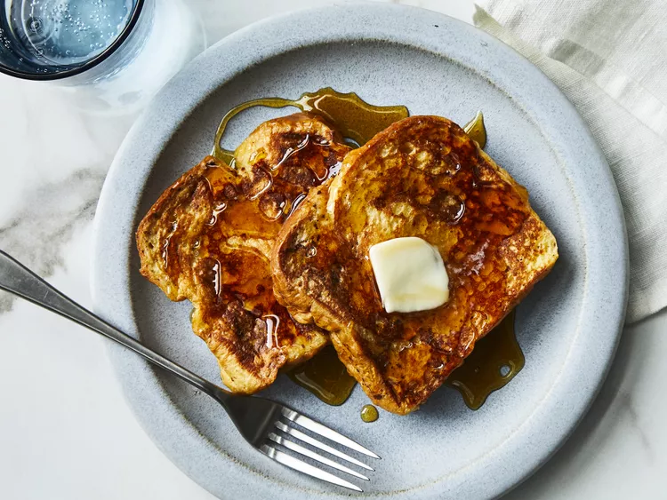

French Toast

Story of the french toast
French toast, also known as pain perdu, has its origins in Ancient Rome. The Romans used stale bread, soaking it in a mixture of milk and eggs before frying it. During the Middle Ages, European cooks repurposed day-old bread, moistening it with eggs and frying it to create this delightful dish. Today, French toast remains a beloved comfort food enjoyed worldwide.
Ingredients
- 2/3 cup milk
- 2 large eggs
- 1 teaspoon vanilla extract (Optional)
- ¼ teaspoon ground cinnamon (Optional)
- salt to taste
- 6 thick slices bread
- 1 tablespoon unsalted butter, or more as needed
Preparation steps
- Gather all ingredients
- Whisk milk, eggs, vanilla, cinnamon, and salt together in a shallow bowl
- Lightly butter a griddle or skillet and heat over medium-high heat
- Dunk bread in the egg mixture, soaking both sides
- Transfer to the hot skillet and cook until golden, 3 to 4 minutes per side
- Serve hot